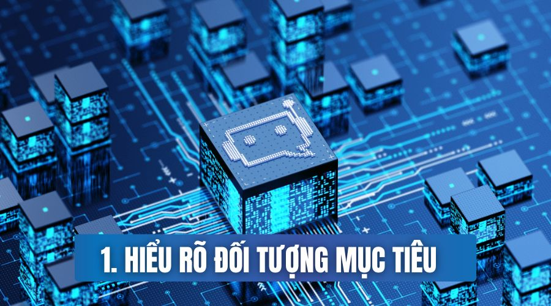

Trong thời đại công nghệ 4.0, việc tích hợp trí tuệ nhân tạo (AI) vào marketing không chỉ là một xu hướng mà còn
là bước đi chiến lược quan trọng giúp các doanh nghiệp tối ưu hóa chiến lược tiếp thị và quảng bá. Dưới đây,
chúng ta sẽ khám phá cách AI có thể mang lại những đột phá lớn trong marketing và giúp nâng cao hiệu suất chiến
lược của bạn.
1. Hiểu Rõ Đối Tượng Mục Tiêu

Việc hiểu rõ đối tượng mục tiêu là bước quan trọng đầu tiên để xây dựng một chiến lược marketing hiệu quả. AI cung cấp những công cụ mạnh mẽ để phân tích dữ liệu và giúp doanh nghiệp tiếp cận đúng đối tượng khách hàng một cách chính xác hơn.
Phân Tích Dữ Liệu Khách Hàng:
Thu Thập Dữ Liệu Tự Động: AI giúp tự động thu thập dữ liệu về hành vi và sở thích của khách hàng thông qua các nền tảng trực tuyến. Chẳng hạn, các công cụ như Google Analytics và Facebook Insights cung cấp thông tin chi tiết về cách mà khách hàng tương tác với nội dung trực tuyến, từ đó doanh nghiệp có thể tạo ra những hồ sơ chi tiết và tin cậy về đối tượng mục tiêu.
Phân Loại và Phân Đoạn Tự Động: AI có khả năng phân loại và phân đoạn khách hàng thành các nhóm dựa trên các đặc tính và hành vi chung. Ví dụ: sử dụng các thuật toán học máy, doanh nghiệp có thể xác định các nhóm khách hàng có cùng sở thích hoặc hành vi mua hàng tương tự, điều này giúp tạo ra các chiến lược tiếp cận chính xác hơn.
Dự Đoán Xu Hướng Tiêu Dùng: AI giúp dự đoán xu hướng tiêu dùng tương lai bằng cách phân tích hành vi của khách hàng hiện tại. Việc này không chỉ giúp doanh nghiệp chuẩn bị trước cho những thay đổi trong sở thích của khách hàng mà còn giúp điều chỉnh chiến lược marketing một cách linh hoạt và kịp thời.
Tối Ưu Hóa Trải Nghiệm Người Dùng:
Cải Thiện Trang Web và Ứng Dụng: Dựa trên dữ liệu về hành vi trực tuyến, AI giúp doanh nghiệp tối ưu hóa giao diện và trải nghiệm người dùng trên trang web và ứng dụng. Ví dụ: thông qua phân tích các hành động của người dùng trên trang web, AI có thể đề xuất các thay đổi giao diện hoặc cải thiện quy trình mua hàng để thu hút và giữ chân khách hàng.
Tương Tác Tự Động: AI có thể tạo ra các hệ thống tự động để cung cấp hỗ trợ và thông tin ngay lập tức cho khách hàng thông qua chatbots và trợ lý ảo. Việc này không chỉ tạo ra trải nghiệm mua sắm trực tuyến mượt mà mà còn tăng cường khả năng tương tác và giữ chân khách hàng.
Cung Cấp Nội Dung Tùy Chỉnh: AI giúp tự động tạo ra nội dung tùy chỉnh dựa trên sở thích và thói quen của khách hàng. Từ thông điệp quảng cáo đến các bản tin hàng ngày, AI có thể cá nhân hóa nội dung để tăng cường sự kết nối và tương tác giữa doanh nghiệp và khách hàng.
Kích Thích Phản Hồi Từ Khách Hàng:
Khảo Sát Tự Động: AI tự động hóa quy trình tổ chức khảo sát và thu thập phản hồi từ khách hàng, giúp doanh nghiệp hiểu rõ hơn về ý kiến và mong muốn của họ để điều chỉnh chiến lược kinh doanh.
Theo Dõi Mạng Xã Hội: AI có khả năng theo dõi và phân tích phản hồi từ khách hàng trên các nền tảng mạng xã hội. Điều này giúp doanh nghiệp phản ứng nhanh chóng với các ý kiến và trải nghiệm thực tế của khách hàng trên mạng xã hội, từ đó điều chỉnh chiến lược tiếp thị phù hợp.
Tích Hợp Phản Hồi Tự Động: AI tự động hóa việc xử lý và đánh giá phản hồi từ khách hàng, đảm bảo rằng những thông tin quý giá này được sử dụng để cải thiện chiến lược tiếp thị liên tục.
2. Làm Chiến Lược Nội Dung
Chiến lược nội dung đóng vai trò quan trọng trong việc xây dựng thương hiệu và duy trì sự tương tác tích cực từ khách hàng. AI giúp tăng cường tính tự động hóa và nâng cao chất lượng nội dung, góp phần tạo nên sự nổi bật cho doanh nghiệp.
Nội Dung Độc Đáo:
Phân Tích Dữ Liệu Tự Động: AI có thể tự động phân tích các xu hướng thị trường, từ khóa phổ biến và sở thích của đối tượng mục tiêu. Ví dụ: các công cụ AI như BuzzSumo và Google Trends giúp doanh nghiệp hiểu rõ hơn về những chủ đề mà khách hàng quan tâm, từ đó tạo ra nội dung hấp dẫn và nổi bật.
Tự Động Hóa Quy Trình Soạn Thảo: AI có thể tự động hóa quy trình soạn thảo nội dung, từ việc chọn từ vựng phù hợp đến cấu trúc câu chữ. Sử dụng các nền tảng như Copy.ai và Jasper.ai, doanh nghiệp có thể tạo ra nội dung chất lượng cao mà không cần nhiều sự can thiệp thủ công.
Linh Hoạt Hóa Lịch Trình Xuất Bản:
Tự Động Hóa Lập Lịch Xuất Bản: AI giúp tổ chức lịch trình xuất bản nội dung một cách linh hoạt, tối ưu hóa thời điểm phát sóng để tăng cường khả năng tiếp cận và tương tác với khách hàng. Hệ thống tự động hóa sẽ tự động xác định thời gian tốt nhất để xuất bản nội dung dựa trên dữ liệu về hành vi người dùng.
Kiểm Soát Tần Suất Xuất Bản: AI kiểm soát tần suất xuất bản nội dung dựa trên sự tương tác từ khách hàng, đảm bảo rằng doanh nghiệp luôn duy trì sự quan tâm và tương tác của khách hàng mà không gây cảm giác quá tải.
Tối Ưu Hóa Thời Điểm Xuất Bản: AI tối ưu hóa thời điểm xuất bản bằng cách phân tích dữ liệu thời gian thực để tận dụng những khoảnh khắc nổi bật nhất, tạo ra hiệu quả tốt nhất cho chiến lược nội dung.
Tăng Cường Tương Tác và Theo Dõi Kết Quả:
Tích Hợp Hệ Thống Tương Tác: AI có thể tạo nội dung khuyến khích tương tác, từ việc đặt câu hỏi đến đề xuất các nội dung phù hợp với hành vi của người dùng, giúp tăng cường sự gắn kết.
Tự Động Hóa Theo Dõi Kết Quả: AI tự động theo dõi và đánh giá hiệu suất của chiến lược nội dung, cung cấp cho doanh nghiệp những thông tin quý giá để điều chỉnh chiến lược một cách linh hoạt.
Phân Tích Phản Hồi Người Dùng: AI thu thập và phân tích phản hồi từ người dùng, giúp doanh nghiệp hiểu rõ nhu cầu và mong muốn của khách hàng để điều chỉnh nội dung cho phù hợp hơn.
3. Tối Ưu Hóa Chiến Lược Quảng Cáo

Chiến lược quảng cáo là yếu tố quan trọng quyết định sự thành công của một chiến dịch marketing. AI giúp tối ưu hóa chiến lược quảng cáo dựa trên dữ liệu thời gian thực và phản hồi từ khách hàng, giúp tăng cường hiệu suất và giảm thiểu lãng phí.
Nghiên Cứu Thị Trường:
Nắm Bắt Đối Tượng Mục Tiêu: Hiểu rõ đối tượng mục tiêu không chỉ đơn giản là nhận biết ai là khách hàng mà còn bao gồm hành vi, sở thích và nhu cầu thực sự của họ. Ví dụ: sử dụng các công cụ như Sprinklr hoặc Brandwatch, các doanh nghiệp có thể thu thập dữ liệu và xây dựng chân dung khách hàng chi tiết.
Phân Tích Dữ Liệu Thị Trường: AI phân tích dữ liệu thị trường để theo dõi xu hướng và đánh giá chiến lược cạnh tranh. Bằng cách sử dụng các nền tảng như Tableau hoặc Power BI, doanh nghiệp có thể theo dõi các hành vi tiêu dùng và điều chỉnh chiến lược cho phù hợp.
Điều Chỉnh Theo Thời Gian Thực: AI giúp doanh nghiệp điều chỉnh chiến lược quảng cáo theo dữ liệu thị trường trong thời gian thực, đảm bảo sự linh hoạt và phản ứng nhanh chóng với biến động của thị trường.
Tự Động Hóa và Tối Ưu Hóa Chiến Lược Nội Dung:
Sử Dụng Công Nghệ AI Cho Nội Dung: AI tự động hóa quy trình tạo nội dung quảng cáo, giúp doanh nghiệp sản xuất nội dung có kiểm soát và hiệu quả. Các công cụ như Adext AI hoặc Albert AI có thể giúp tối ưu hóa quảng cáo dựa trên dữ liệu về hiệu suất.
Tùy Chỉnh Theo Hành Vi Người Dùng: AI theo dõi hành vi người dùng và điều chỉnh nội dung quảng cáo cho phù hợp, giúp mỗi cá nhân nhận được thông điệp quảng cáo hợp với sở thích và nhu cầu cá nhân.
Kiểm Soát Thời Điểm Xuất Hiện: AI tối ưu hóa thời điểm quảng cáo xuất hiện để đạt hiệu suất cao nhất, đảm bảo rằng quảng cáo được hiển thị vào thời điểm mà khả năng tương tác cao nhất.
Đánh Giá Hiệu Quả và Điều Chỉnh Liên Tục:
Theo Dõi KPIs Chính: AI theo dõi các chỉ số hiệu suất chính như tỷ lệ chuyển đổi, chi phí quảng cáo và tương tác người dùng. Các nền tảng như Google Analytics hoặc HubSpot cho phép doanh nghiệp theo dõi và phân tích dữ liệu quảng cáo chi tiết.
Sử Dụng Phản Hồi Khách Hàng: AI tự động thu thập và phân tích phản hồi từ khách hàng, giúp doanh nghiệp hiểu rõ nhu cầu và mong muốn của họ để điều chỉnh chiến lược quảng cáo.
Thực Hiện Thử Nghiệm A/B: AI hỗ trợ thử nghiệm A/B, giúp doanh nghiệp đánh giá hiệu suất giữa các biến thể quảng cáo và chọn ra chiến lược tối ưu nhất dựa trên dữ liệu thực tế.